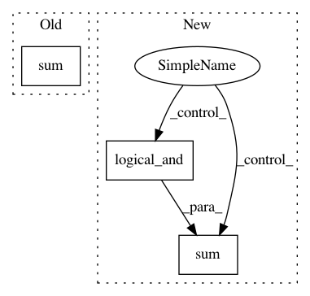

ac94d1ce59c97a1bc9217daf7d20d3d5220dad42,mir_eval/melody.py,,raw_chroma_accuracy,#Any#Any#Any#Any#Any#,494
Before Change
matching_voicing = ref_voicing * (est_cent > 0)
cent_diff = np.abs(cent_diff - octave)[matching_voicing]
frame_correct = (cent_diff < cent_tolerance)
n_voiced = float(ref_voicing.sum())
raw_chroma = (frame_correct).sum()/n_voiced
return raw_chroma
After Change
return 0.
// // Raw chroma = same as raw pitch except that octave errors are ignored.
nonzero_freqs = np.logical_and(est_cent != 0, ref_cent != 0)
if sum(nonzero_freqs) == 0:
return 0.
freq_diff_cents = np.abs(ref_cent - est_cent)[nonzero_freqs]
In pattern: SUPERPATTERN
Frequency: 3
Non-data size: 3
Instances
Project Name: craffel/mir_eval
Commit Name: ac94d1ce59c97a1bc9217daf7d20d3d5220dad42
Time: 2020-04-06
Author: rmb456@nyu.edu
File Name: mir_eval/melody.py
Class Name:
Method Name: raw_chroma_accuracy
Project Name: craffel/mir_eval
Commit Name: ac94d1ce59c97a1bc9217daf7d20d3d5220dad42
Time: 2020-04-06
Author: rmb456@nyu.edu
File Name: mir_eval/melody.py
Class Name:
Method Name: raw_pitch_accuracy
Project Name: SheffieldML/GPy
Commit Name: f35578804a2dcbc9066d48a103bcaf4ed1d0fd5d
Time: 2013-04-23
Author: james.hensman@gmail.com
File Name: GPy/kern/coregionalise.py
Class Name: coregionalise
Method Name: dK_dtheta